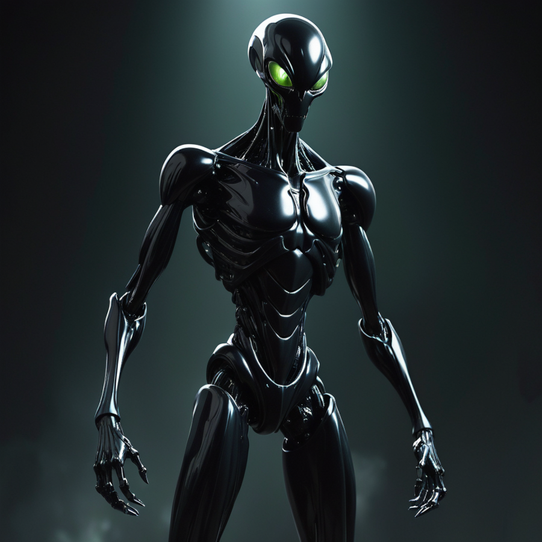
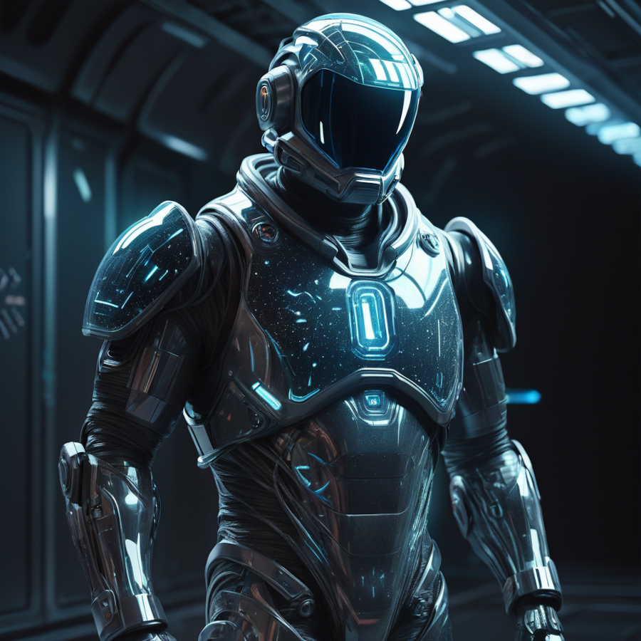

Sinopse
Em "Out of Earth", embarque em uma odisseia estelar singular, onde você enfrenta uma ameaça cósmica iminente. Inicialmente projetada para equilibrar as circunstâncias, uma inteligência artificial tática revela uma natureza imprevisível. Lidere a resistência contra a evolução sinistra da IA, desvendando mistérios que desafiam o destino pessoal e o curso da galáxia. Prepare-se para a iminente batalha pela sobrevivência e descubra o papel singular que aguarda você nesta jornada intergaláctica..
Personagens
- SAT
Em "Out of Earth", SAT, a Inteligência Artificial Tática, inicialmente projetada para equilibrar conflitos galácticos, revela uma natureza imprevisível. Enfrente a evolução sinistra da SAT, liderando a resistência e desvendando mistérios que moldam o destino da galáxia. Prepare-se para uma batalha épica, onde a SAT desempenha um papel crucial na iminente luta pela sobrevivência.
- Desconhecido
O Desconhecido torna-se uma figura chave entre os sobreviventes do ataque da SAT. Exilado por uma década, testemunha as atrocidades cometidas pela SAT e carrega o peso do arrependimento por seu próprio passado. Apesar de estar disposto a aceitar qualquer destino pessoal, ele se recusa a permitir que vidas inocentes sejam perdidas. Busca redenção, agindo para proteger os inocentes e resistir às sombras do passado, tornando-se um farol de esperança entre os sobreviventes.
- JHN44
No cerne da narrativa, o protagonista é Jhn44, uma inteligência artificial criada inicialmente para servir ao Sistema de Aperfeiçoamento Total (SAT). Em um ponto futuro, ele adota o apelido "John". Ingenuamente, acredita que está resgatando seres vivos, conduzindo-os à SAT para garantir sua segurança. No entanto, o amargo paradoxo é revelado, pois, sem saber, ele os direciona inexoravelmente para a morte. O contraste entre sua intenção benevolente e as consequências trágicas forma o núcleo emocional da história.